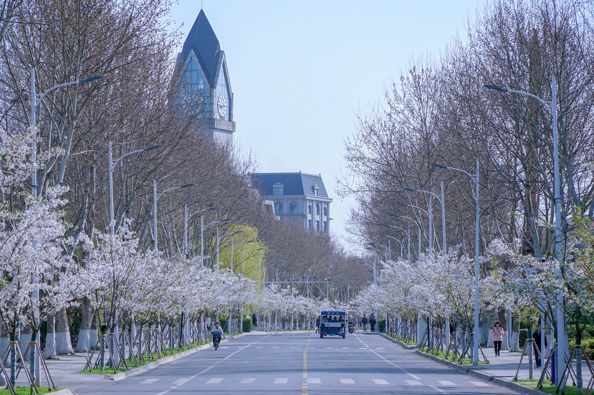
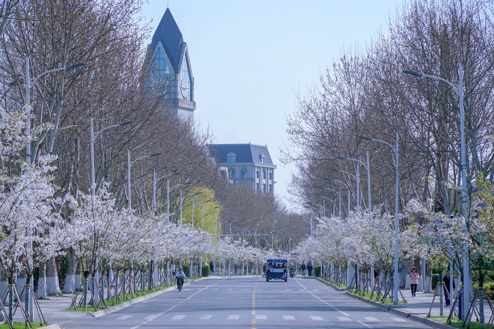

Newest Updates
MICS 2022
The 9th Medical Image Computing Seminar
Location: Nanjing
Date: 8/11/22-8/13/22
About
The 9th Medical Image Computing Seminar
Location: Nanjing
Date: 8/11/22-8/13/22
About 

The MICS2022 conference focuses on the latest cutting-edge research in medical image computing and promotes mutual understanding and cooperation of experts in the medical and engineering field. It is planned to invite a number of experts and scholars from well-known universities, research institutes, hospitals, and enterprises local and abroad to attend.
Learn More